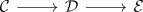

additivity of the stable connective k-space functor
Proposition
The connective K space functor from Cat Stable maps split verdier sequences to split fiber sequences.
Proof
Let

be a split verdier sequence.
using underlying anima criterion for a fiber sequence in connective spectra and <surjectivity> it suffices to show that the underlying space is a fiber sequence in Anima
We claim that
\begin{align*}
p: \mathcal{D} \rightarrow \mathcal{E}
\end{align*}
this follows from:
- left split verdier projection as cocartesian fibration
- right split verdier projection as cartesian fibration
now use